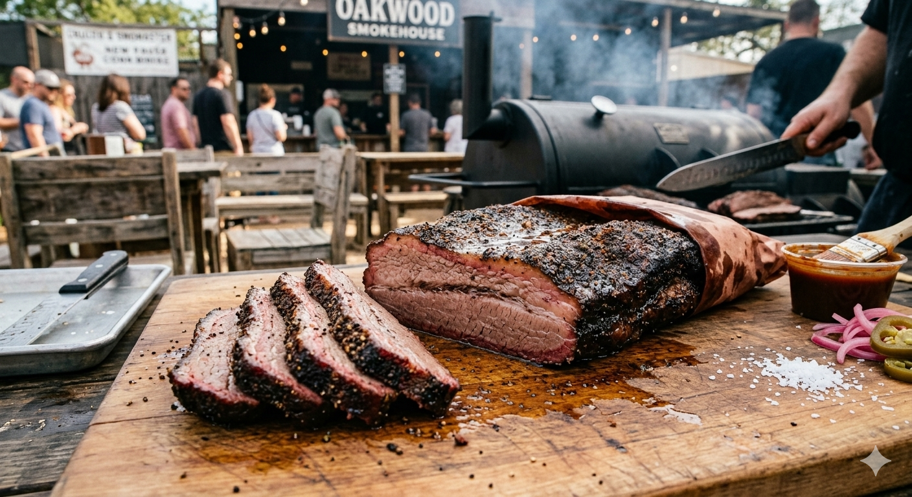

Smoked Meat

Home
Description
To get that perfect "bark" (the dark, flavorful crust) and tender texture shown in the image, you’re looking at a classic Texas-style Smoked Beef Brisket.
This is a "low and slow" process that relies more on patience and temperature control than complicated ingredients.
Ingredients
- The Meat: A whole "packer" beef brisket (12-15 lbs).
- The "Dalmatian" Rub: Equal parts coarse Kosher salt and 16-mesh black pepper.
- The Spritz: A mix of apple juice and apple cider vinegar (for moisture during the smoke).
- The Wood: Oak or Hickory (post oak is the gold standard for this style).
Steps
- Preparation: Trim the excess hard fat from the brisket, leaving about 1/4 inch of the fat cap to keep the meat moist.
Coat the entire brisket generously with the salt and pepper rub. Let it sit at room temperature for about 40 minutes while you prep the smoker.
- The Smoke: Preheat your smoker to 110°C (225°F). Place the brisket fat-side up.
Smoke until the internal temperature of the meat reaches roughly 75°C (165°F). This usually takes 6 to 8 hours.
- The Spritz: Every hour after the first 3 hours, lightly spritz the meat with your juice/vinegar mix to prevent the edges from drying out.
- The "Texas Crutch" (Wrapping): Once the meat hits that 75°C mark and the bark looks dark and set,
wrap the brisket tightly in pink butcher paper (as seen in the photo) or heavy-duty foil. This helps it push through the "stall" (where the temperature stops rising).
- The Finish: Put the wrapped brisket back in the smoker.
Continue cooking until the internal temperature reaches 95°C - 96°C (203°F - 205°F). At this point, a meat probe should slide in like it's hitting softened butter.
- The Rest (Crucial): Don't cut it yet! Let the brisket rest in an insulated cooler (wrapped in towels) for at least 2 to 4 hours.
This allows the juices to redistribute so the meat doesn't dry out the moment you slice it.